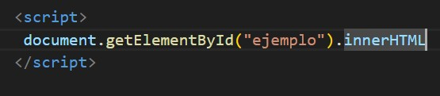
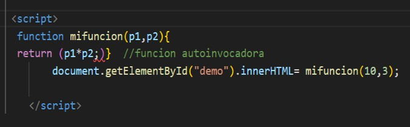

Introduccion al javascript
JavaScript fue creado por Brendan Eich en 1995 mientras trabajaba en Netscape Communications Corporation. Originalmente llamado Mocha, luego se le cambió el nombre a LiveScript y finalmente se estableció como JavaScript. La idea era tener un lenguaje que permitiera a los desarrolladores agregar interactividad a las páginas web de manera sencilla.
JavaScript es un lenguaje de programación de alto nivel que se utiliza principalmente para el desarrollo web.
Su papel principal es mejorar la interacción del usuario con las páginas web,
permitiendo dinámicas que van más allá de las capacidades estáticas del HTML y el estilo
JavaScript se ha convertido en una de las tecnologías más importantes y universales en el desarrollo web moderno,
con un ecosistema rico en bibliotecas y marcos de trabajo como React,
Angular y Vue.js que facilitan la creación de aplicaciones web complejas y eficientes.
Operadores aritméticos
Java script tiene un amplio conjunto de operadores, entre los que se incluyen operadores aritméticos lógicos, bit a bit y de asignación, así como algunos operadores varios. Los operadores permiten realizar cálculos complejos y tomar decisiones lógicas en función de comparaciones y otros tipos de condiciones, los operadores aritméticos estándar son adiciones o suma (+), sustracción o resta (-), multiplicación (*) y división (/), incremento (++), decremento (- -).
Variables
Las variables de java script son contenedores para almacenar valores de datos Todas las variables de java script debe identificarse con nombres únicos Estos nombres únicos se llaman identificadores Los identificadores pueden ser nombrados cortos (como x o y) o nombre mas descriptivos, (por ejemplo edad, suma, totales).
Agregar java script directamente a un archivo html
Para insertar JS de forma directamente en HTML se utiliza la etiqueta script>/script, el código JS debe quedarse dentro de esta etiqueta. El código JS se puede colocar dentro de:
- La etiqueta head
- La etiqueta body
Dependiendo de donde se agregue el código Js en el archivo HTML, la carga será diferente. Por lo general se recomienda agregarlo en el head para que permanezca separado del contenido del html Pero colocarlo dentro del body puede ayudar a mejorar la velocidad de carga ya que el contenido del sitio web se cargará mas rápido, y solo después de eso se procesa el java script.
Referencia con javascript
El método getElement es una de las funciones más utilizadas en JavaScript para manipular elementos en el DOM (Document Object Model). Es fundamental para acceder y modificar elementos HTML de manera eficiente y directa. en JavaScript que se utiliza para obtener un elemento del DOM que tiene un atributoespecífico. Una vez que se obtiene el elemento, puedes realizar diversas operaciones sobre él, como modificar su contenido, cambiar su estilo, agregar eventos, etc.
Método- get element byld()
El método get element byld devuelve el elemento que tiene el atributo id con el valor especifico. Este método es uno de los métodos más comunes en el dom de html y se usa casi cada ves que desea manipular u obtener información de un elemento de su documento. Devuelve nulo si no existe elementos con el ID específico. Una identificación debe ser única dentro de una página. Sin embargo, si existe mas de un elemento con el ID especifico, el método get element byld devuelve el primer elemento en el código fuerte.
Funciones
Las funciones son uno de los pilares de js
Una función es un procedimiento en js, un conjunto de sentencias que realizan una tarea o calcular un valor.
Para usar una función debe declararse en algún lugar y se ejecuta cuando algo la llama.
La sintaxis para declarar funciones en js es:
El codigo dentro de la funcion se ejecutara cuando se le "llame" ala funcion por ejemplo: -cuando ocurre un evento (dando clic en un boton)
Al dar clic (llamar) el codigo javascript se activa
Tipos de datos principales
Los tipos de datos principales de java script son:
- Cadena:un valor de cadena o string esta formado por una cadena de cero a mas caracteres Unicode (letras, dígitos y signos de puntación). El tipo de dato cadena se usa para representar texto en java scrip. Por ejemplos “este es un tecto” “45 no tiene valor numérico es un texto”
- Números:En java script, no se distingue entre los valores enteros y de punto flotante; un numero de java script puede ser cualquiera de ellos (internamente, java script representa todos los números como valores de punto flotante). Los valores enteros pueden ser números enteros positivos, números enteros negativos y 0
- Booleano: mientras que los tipos de datos de cadena y números pueden tener un numero prácticamente limitado de valores diferentes, el tipo de datos booleanos solo puede tener dos, estos son true y false. Un valor booleano es un valor de validez; especifica si una condición es verdadera o no.
Eventos
Un evento HTML puede ser algo que hace el navegador, o algo que hace un usuario. Javascript puede “reaccionar” en estos eventos, algunos eventos HTML comunes son:
- Onchange: un elemento HTML ha sido cambiado
- Onclick: el usuario hace clic en un elemento html
- Onmouseover: el usuario mueve el mouse sobre un elemento HTML
- Onmouseout:el susario presiona una tecla del teclado
- Onkeydown: el usuario presiona una tecla del teclado
- Onload: el navegador ha terminado de carga la pagina
Dom document object model
El modelo de objetos de documento (dom) de w3c es una plataforma y una interfaz de lenguaje neutral que permite que los programas y los scripts accedan y actualicen dinámicamente el contenido, la estructura y el estilo de un documento. El Dom está definido y administrado por el w3c, por lo que los distintos navegadores simplemente aplican las especificaciones del world wide de web consortium, para dar soporte al dom en sus aplicaciones, Cuando se carga una pagina web, el navegador crea un modelo de objeto de documento de la página. Con el dom, los programadores pueden construir documentos, navegar por su estructura, y añade, modificar o eliminar elementos y contenidos. Se puede acceder a casi cualquier elemento que se encuentre en un documento HTML.
El html dom en un modelo de objetos estándar y una interfaz de programación para HTML que define:
- Los elementos HTML como objetos
- Las propiedades de todos los elementos HTML
- Los métodos para acceder a todos los elementos HTML
- Los eventos para todos los elementos HTML
En otras palabras: el HTML DOM es un estándar sobre como obtener, cambiar, agregar o eliminar elementos HTML. El dom significa document object model, en español lo definiríamos como modelo de objetos del documento es una interfaz que implementan los navegadores para poder interactuar con los elementos HTML
DOM: y sus secciones
- Conversión: el navegador lee los bytes sin procesar del HTML del disco o de la red y los traduce en caracteres individuales según la codificación especificada del archivo
- Conversión en tokens: el navegador convierte codenas de caracteres en tokens diferentes- especificados por el estándar w3c html por ejemplo body , html y otras cadenas entre paréntesis angular. Cada token tiene un significado especial y un conjunto de reglas propio.
- Lexicalización: los tokens emitidos se convierten en “objetos” que definen sus propiedades y reglas
- Construcción del dom: por último, los objetos creados se vinculan en una estructura de datos en forma de árbol que muestran las relaciones entre objetos primarios y secundarios definidas en el HTML original, el resultado final de todo este proceso es el document object model, que el navegador usa para todos los procedimientos de la página.
Para poder manipular los elementos HTML con JS, primero debemos encontrarlos.
Esto lo podemos hacer varias formas:
- Encontrar los elementos por su id
- Encontrar los elementos por su clase
- Encontrar los elementos por su nombre de etiqueta
- Encontrar elementos por su selector css
Encontrar elementos por su ID El método getElementByld() encuentra al elemento que tiene el "id" especifico. Este método es uno de los mas comunes en HTML DOM, y se usa cada vez que desea manipular u obtener información de un elemento en su documento, si no hay elementos con el "id" especificado devuelve null. Un id debe ser único en un archivo HTML, sin embargo, si existe mas de un elemento con el mismo id especificado, el método getElementByld devuelve el primer elemento en el código fuente.
Encontrar elementos por su nombre de clase
El método getElmentsByClassName devuelve una colección de todos los elementos en el documento
con el nombre de clase especificado, como un objeto HTML collection (lista de elementos HTML).
El objeto HTMLcollection representa una colección de nodos. Se pueden acceder a los nodos por números de índice comenzando por el 0.
Encontrar elementos por su nombre de etiqueta
El metodo getElmentsByTagName devuelve una coleccion de todos los elementos en el ducumento con el nombre de etiqueta especificado,
como un objeto HTML collection.
Con el valor del parámetro “*” devuelve todos los elementos en el documento.
usando la propiedad de lenght del objeto HTML collection para determinar la cantidad de elementos
con el con el nombre de etiqueta especificado, luego puede recorrer todos los elementos y extraer la información que desee
Encontrar elementos por su selector css
el método querySelector solo devuelve el primer elemento que coincide con los selectores especificado. Para devolver todas las coincidencias,
utilice el motodo querySelectorAll en su lugar.
encontrar elementos por su elector css
el método querySelectorAll devuelve todos los elementos del documento que coinciden con un selector ID especificado,
con un objeto NodeList estático.
ejemplo
"document.querySelectorAll(“selector css, o varios selectores separados por comas”);"
Propiedad style
En JavaScript podemos utilizar la propiedad “style” para manipural el estilo de un elemento HTML, o para crear uno de nuevo, para cambiar el estilo de un elemento HTML se debe usar la siguiente sintaxis Document.getElementByld(id).style.propiedad=”valor o nuevo valor”:
Propiedad clsss list
La propiedad classlist devulve los nombres de clase de un elemento. Esta propiedad es útil para agregar, eliminar y alternar clases css en un elemento. La propiedad classlist es de solo lectura, sin embargo, puede modificarla utilizando los métodos: add(), remove() y toggle(). !La propiedad classlist no es soportada en ie9 y versiones anteriores!
Classlist.add
La propiedad classlist más el método add agrega uno o mas nombres de clase a un elemento. Si la clase especificada ya existe, la clase no se agregará
Classlist.remove
La propiedad classlist mas el método remove elimina uno o mas nombres de clase de un elemento. Eliminar una clase que no existe, no arroja un error
Classlist.toggle
La propiedad classlist mas el método toggle alterna entre un nombre de clase para un elemento. El primer parámetro elimina la clase especificada de un elemento y devuelve falso. Si la clase no existe , se agrega al elemento y el valor de retorno es verdadero, el segundo parámetro opcional es un valor booleano que obliga a agregar o quitar la clase, independiente de si ya existe o no. Por ejemplo:
- Eliminar una clase : element.classlist.toggle(“classtoremove”,false);
- Agregar una clase: element.classlist,toggle(“classtoadd!,true);
Otros Eventos
El HTML DOM le permite ejecutar código cuando ocurre un evento. El navegador genera eventos cuando “suceden cosas” a elementos HTML como por ejemplo:
- Al hacer click con el mause: onclick
- Al hacer doble click con el mause: ondbclick
- Al colocar el mause sobre un elemento: onmouseover
- Al alejar el mause de un elemnto: onmouseout
- Cuando una pagina web se ha cargado: onload
- Al presionar una tecla: onkeydown
- Al hacer scroll en la pagina: onscroll
Evento-listener
El método addEventListener adjunta un controlador de eventos especificado. La sintaxis para este método es la siguiente: Elemento.addeventlistener( evento,funcion) El método removeEventListener() se puede usar para eliminar un controlador de eventos que se haya adjuntado con el método addeventlistener(). El método document.addEventListener() se usa para adjuntar un contolador de eventos al documento HTML. !Para hacer referencia al evento en estos métodos no se usa el prefijo “on”, por ejemplo se usa “click” en lugar de “onclick”.!
El método addeventlistener no es soportado en internet explorar 8 y versiones anteriores
removeEventlistener
El método removeEventListener elimina un controlador de eventos que se ha adjuntado con el método addeventlistener para eliminar controladores de eventos, la función especificada con el método addeventlistener debe ser una función externa.
Declaración condicional
Una declaración condicional se usa para determinar el flujo del programa basado en una condición, muy a menudo, cuando escribe código, se desea realizar diferentes acciones para diferentes decisiones. Para hacer esto se puede usar sentencias condiciones en el código. En java script tenemos las siguientes declaraciones:
- Use if para especificar un bloque de código de código para ejecutarse, si una condición especificada es verdadera
- Use else para especificar un bloque de código para res ejecutado, si la misma condición es falsa
SINTAXIS
La sintaxis de una declaración condicional básica es la siguiente;
if (condición) {
código que será ejecutado si la condición es verdadera {
else {
código que será ejecutado si la condición es falsa {
operadores de comparación
los operadores de comparación se utiliza una declaración lógica para determinar la igualdad o diferencia entre variable o valores.
Varias condiciones
Las declaraciones else if en java scrip permiten evaluar múltiples condiciones secuenciales.
Esto es útil cuando se tienen mas de dos posibles situaciones que manejar en el código.
If (condición) {
Si la verdad, se ejecuta el bloque de código correspondiente y se salta el resto de las condiciones
Si es falsa, se pasa a la siguiente condición
Else if {
Si es verdad, se ejecuta su bloque de código y se termina la evaluación, si es falsa, se pasa ala siguiente condición
Else{
Este bloque se ejecuta si ninguna de las condiciones anteriores es verdadera. Es opcional, pero útil para manejar casos no previstos.
Viewport y @medias
El viewport o ventana grafica es el área visible del usuario de una pagina web. Varias según el dispositivo y será mas pequeña en un smartphone que en la computadora, antes de las tabletas y los teléfonos móviles, las paginas web se diseñaban solo para pantallas de computadora y esa común que las paginas web tuvieran un diseño estático y un tamaño fijo. Luego, cuando comenzamos a navegar por internet utilizando tabletas y las paginas web de tamaño fijo eran demasiado grandes para ajustarse a la ventana gráfica, para solucionar esto, los navegadores en esos dispositivos redujeron la pagina web completa para ajustar a la pantalla. Los usuarios están acostumbrados a desplazar sitios web verticalmente tanto en dispositivos de escritorio como móviles, pero no horizontalmente. Por lo tanto, si el usuario se ve obligado a desplazarse horizontalmente o alejarse, para ver toda la pagina web, se obtiene una experiencia de usuario pobre. En HTML introdujo un método para permitir que los diseñadores web tomando el control de la ventana gráfica, atreves de la etiqueta "meta". Un elemento de vista < meta > le da al navegador instrucciones sobre como controlar las dimensiones de la escala de la página. < meta name=”viewport” Content=”width=divice-width,initial-scale=1.0” > La parte width=divice-width establece el ancho de la pagina para seguir el ancho de pantalla del dispositivo ( que varia dependiendo del dispositivo) La parte de la escala inicial =1.0 establece el nivel de zoom inicial, cuando el navegador carga la pagina por primera vez. La etiqueta viewport Este en un ejemplo de una pagina web sin la etiqueta meta de la ventana gráfica, y la mismo pagina web con la etiqueta meta viewport
@Medias
Las @medias son un modulo de CSS3 que adapta que adaptan la representación del contenido a las características de un dispositivo. Se convirtió en un estándar recomendado por la w3c en junio de 2012 y es un principio básico del diseño web adaptativo

Historia
las medias se esbozaron por primera vez en la propuesta inicial de css de hakon wium en 1994, pero no se convirtió en parte css 1, la recomendación HTML 4 de 1997 muestra un ejemplo de cómo podrá agregarse en el futuro. En el 2000 la w3c comenzó a trabajar en las medias y también en otro esquema para el soporte de varios dispositivos: cc/pp (composite copability/preference profile). Las 2 acciones estaban orientadas al mismo problema, pero cc/pp es centrado en el servidor, mientras las media esta centrada en el cliente. El primer borrador publico para media queries fue publicado en 2001 y la especificación se convirtió en una recomendación de la w3c en 2012 después que los navegadores el dieron soporte.
@media
Css2 introdujo tipos de medios. La regla @media, introducida en css2 hizo posible definir diferentes reglas de estilo para deferentes tipos de medios. Se podría definir reglas de estilo para computadoras, impresora, dispositivo de mano, televisión, etc. Desafortunadamente, estos tipos de medios nunca recibieron muchos soportes por parte de los dispositivos aparte del tipo de medio de impresión. Css3 introdujo @media queries que extendieron la idea de los tipos de @media de css2: en lugar de buscar un tipo de dispositivo, analizan la capacidad del dispositivo. Las @media queries se pueden utilizar para verificar muchas cosas, como ancho y alto de la ventana gráfica, ancho y alto del dispositivo orientación del dispositivo (horizontal o vertical) y la resolución. El uso de media queries es una técnica popular para entregar una hoja de estilo personalizada para computadoras de escritorio, computadoras portátiles, tabletas y teléfonos móviles (como los teléfonos iphone y Android).
Soporte del navegador
Tipos de @media css
Dispositivos
Dispositivo:Computadora de escritorio
Tamaño:Estilo normal
Dispositivo:Laptop y Tablet horizontales Tamaño:@media screen and (mas-width:1024px)
Dispositivo:Tablet vertical y smarphone horizontal tamaño:@media screen and (mas-width:720px)
dispositivo:Smartphone vertical tamaño @media screen and (mas-width:480px)